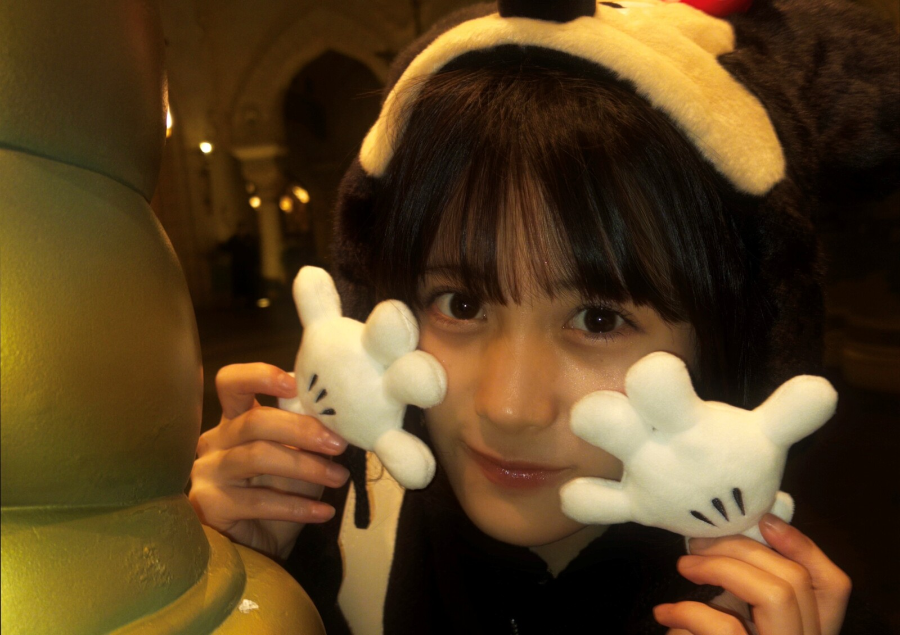

橘杏咲の立ち話もなんですから！ 第23回橘杏咲的“站着聊可说不完！” 第23回
皆さんこんにちは🔆
大家好🔆
コラムのおかげで季節の移り変わりを文字を通して再認識することができていて助かっています。もう6月ですね。
多亏了这个专栏，我总能透过文字重新感受到季节的更迭，真是帮大忙了。转眼就已经6月了呢。
梅雨の季節かぁ、梅雨は癖毛にとって少しイヤな期間です。私は中学1年生くらいのときに縮毛矯正をかけてからは癖毛ちゃんだ！と一目でわかるほどの癖毛ではないのですが、内はかなりくるくるになりがち。
梅雨季来了啊，对自然卷来说，梅雨季可是一段有点让人头疼的时期。我大概在初一的时候做过缩毛矫正，那之后虽然不至于一眼就被看出来“哇，是自然卷宝宝！”，但头发内侧还是动不动就卷得一塌糊涂。
そろそろサラサラストレートかけたいなぁ〜。
差不多该去拉个顺滑直发啦〜。
ストレートといえば髪型もここ最近ずっと暗髪ボブなので新鮮味が欲しいなと思うことが増えたのですが、やっぱり安定から降りるのは怖い…。
说到直发，我最近发型一直都是深色波波头，虽然越来越觉得想换点新鲜感，但果然还是不敢轻易离开舒适圈啊……
大学生になってからはずっと短いので伸ばしてみてもいいなと思うのですが、我慢ができなさすぎる！ミニボブは伸びかけが1番微妙なのでついつい切っちゃいます。
上了大学之后我就一直留着短发，虽然也觉得留长试试挺不错的，但我实在太沉不住气了！迷你波波头在半长不短的时候最尴尬了，结果一不小心又给剪回去了。
今はエクステという文明の利器もあるのでタイミングがあったら少しの期間だけイメチェンしてみてもいいのかもと思ってはや数ヶ月。
虽然现在也有接发这种文明利器，心想有机会的话短暂换个造型也不错——这么想着，一转眼都已经过去好几个月了。
ボブヘアのキャラクターとのご縁が多いのもあって、気持ち的にも簡単には変えられないですね。
加上我和波波头角色的缘分很深，从心情上来说也没法轻易换发型呢。
今後いきなり特大イメチェンして、その数週間後には綺麗さっぱり戻ってるなんてこともあるかもしれないので、ボブじゃない私でも私って認識してくださいね。
说不定以后哪天我会突然来个超大型形象改造，结果几周后又干干净净变回原样，所以就算不是波波头的我，大家也一定要认出我来哦。
でもやっぱりボブが好き。
不过果然还是最喜欢波波头。
そういえば、5月のコラムを好きと言ってくださる声をちょこちょこ聞いて…！
说起来，我断断续续听到好多读者说喜欢5月的专栏……！
改めてコラムってこういうので、こういうのも、こういうのがいいのか…！となりました。勿論その月にあったイベントなどお仕事について細かくお話しするのも良いけれど、「立ち話もなんですから！」と自称するくらいなので、立ち話から派生して止まらなくなっちゃった。みたいなお話がメインでもいいんだなと感じました。
这让我重新意识到，原来专栏写成这样、或者那样、原来这样写也挺好的呀……！当然，细致聊聊当月参加的活动或工作也很棒，但既然专栏都自称“站着聊可说不完！”了，我就觉得以“原本只是站着闲聊，结果越扯越收不住”这种话题为主，其实也完全可以嘛。
立ち話って「このお話をするぞ！」と意気込んで話すことというよりは、あのねそれでね実はねとついつい話したいことが溢れてしまうみたいな方が近い気がしますもんね。
毕竟所谓站着闲聊，与其说是卯足了劲想“我要讲这件事！”，倒更像是“我跟你说哦、然后呢、其实呀”这样，不知不觉想说的话就止不住往外冒的感觉吧。
今後はそういったお話メインであまり気張らず行こうかなと思った今日この頃でした。
最近我就想着，今后不如就以这类随性话题为主，别太紧绷着写啦。
5月も可愛い収集家の私はその才を遺憾無く発揮していました。
5月里，作为“可爱事物收藏家”的我，也把这项才能发挥得淋漓尽致。
ガチャガチャも食玩もくじも見つけたらついついやってしまうので小さな可愛いがカバンに溜まっていくことたまっていくこと。
不管是扭蛋、食玩还是抽赏，只要撞见了就管不住手，于是各种小小的可爱物件在包里越积越多、越积越多。
サンリオはメロディさん、リルアラはムースキャミーとあまりにも王道きゅるきゅる可愛いが好きみたいです私は。
三丽鸥推的是美乐蒂，Lil ala mode 推的是 Mousse（慕斯）和 Cammy（卡米）——看来我实在太吃那种王道又水灵灵的甜美可爱挂了。
ランダムおもちゃが大好きな中高の友人たちと交換したり一緒に開けたりするのも楽しくて大好きです。好きなものが少しずつ違うので、あの子これ欲しいかなあげたら喜ぶかなぁとついつい買い過ぎてしまう〜！
和同样超爱盲盒小玩具的初高中朋友们互相交换、一起拆包也超级开心，我太喜欢这种时光了。因为每个人推的角色都有点不一样，我总忍不住想着“她是不是想要这个呀？送给她她肯定会开心吧”，结果一不小心就买太多啦〜！
リルアラの一番くじは出会えなさ過ぎたのでオンラインでゲットしました。少しだけ回したら、ラッキーなことにお目当てのB賞の巾着をゲット出来たので大満足でした。
Lil ala mode 的一番赏线下实在太难偶遇了，所以我直接在网上入手了。只稍微抽了几发，就超级幸运地抽中了心仪的 B 赏束口袋，简直心满意足。
巾着ポーチなんていくらあってもいいですから！またカバンの中に可愛いが増えてしまう〜
束口收纳袋这种东西，有多少个都不嫌多嘛！包里的可爱小物件又要喜加一啦〜
ガチャや食玩のおまけでゲットしたチャームをつけたら…これまた可愛いの二乗で幸せ指数爆増ですね。
再把扭蛋或食玩附赠的小挂件挂上去……简直是可爱度平方级飙升，幸福指数瞬间爆表呢。
その分物理的にもカバンの重さは増えていくのですが。可愛いの重みと考えたら可愛いので、良いとしましょう。
虽说包在物理层面上也跟着越来越重了，但只要换个角度想成“这是可爱的分量”，就觉得这重量也挺可爱的，那就原谅它吧。
先日こむぎの妖精さんのお誕生日をお祝いに、可愛いの帝国に友人と遊びに行ってきたので、どこかのタイミングでお写真載せます…！
前阵子为了庆祝小麦粉妖精的生日，我和朋友一起去“可爱帝国”玩了一趟，找机会再把照片放上来……！
やっぱりテーマパークはいいですね。その空間にいる時間はどうしても自然発生してしまう負の感情が限りなくゼロに近くなる…。そろそろ夢の国にも足を運びたいところです。
主题乐园果然最棒了呀。置身于那片空间里的时候，平日里难免会自动冒出来的负面情绪都会无限趋近于零……也差不多该去一趟梦幻国度了。
ポストしたあおいさんとゆりとの夢の国も本当に楽しかったな。
之前发帖晒过的、和葵小姐还有侑里一起去的梦幻国度之旅也真的超开心啊。
ずっと三人で行きたいと言っていたので、ついにそれが念願叶ったと大興奮の1日でした。
我们之前一直念叨着想三个人一起去，那一天真是怀着“终于如愿以偿啦！”的激动心情玩得嗨到不行。
冬真っ只中だったので寒かったけど、私たちはずっとほくほくしてました。熱冷めやらないままみんなでお泊まりまでしちゃってね。
虽然当时正值隆冬冷得要命，但我们仨全程都暖呼呼、乐陶陶的。玩完之后余兴未消，大家干脆直接凑在一起过夜了呢。
最近も三人でお仕事のあとに無限おしゃべりしたり、WIXOSS開封会したりで相変わらず楽しんでます。
最近我们也照旧在工作结束后三个人无限畅聊，还办了 WIXOSS 拆卡会，依然玩得不亦乐乎。
まだ夢の国でのお写真あったのでそれを添えて📸
手里还有梦幻国度的存照，顺便附上分享给大家📸

こうして言語化すると楽しいこと、幸せなこと、好きなことが尽きない毎日ですね。
像这样用文字写出来一看，真是每天都被数不清的快乐、幸福与热爱填满呀。
難しいことは考えずにずっとこうでいたいなという気持ちもありつつ、最近はとある目標があって。
虽然心里也有着“什么复杂事都不去想，一直保持这样就好了”的念头，但最近其实有了一个小目标。
というのも、今、目標をつくることが目標で…！
其实呢，我现在把“定下一个目标”当成了目标……！
コラムでも毎月挙げているような一カ月の目標だったり、密かにメモしているここ一年の目標はあるのですが、もっと先のここ数年の目標というものが明確に無いんです。
像专栏里每个月都会列出来的月度目标，或是我自己偷偷记在备忘录里的年度目标倒是都有，但放眼更长远的、未来几年的目标，我还一直没有明确下来。
お仕事の話だけに限らず、人生としての目標みたいなビッグなもの！それが欲しいなと思って、最近はやっと数年後に目を向け始めました。
不仅仅局限于工作，而是类似“人生目标”那样宏大的东西！因为很想拥有这样的目标，我最近终于开始把目光投向几年后的未来了。
目標を定めるってとっても勇気がいることだと思ってしまっている自分がいるんです。それを達成できなかった時の自分に対しての失望感を感じたくないというのもありますし、定めたことによって焦ってしまうのが嫌だなと思ってしまうんですよね。
我自己其实一直觉得，确立目标是一件非常需要勇气的事。一方面是不想体会万一没能达成时对自己的失望感，另一方面也讨厌因为定下了目标反而让自己变得焦虑不安。
きっと達成出来なかったとしても、定めるという行為が大切で、その目標を達成しようと頑張るその過程が大事だという考えが主かもしれません。でもやっぱりその考えに持っていくって難しいなと…。
主流观点或许会说，哪怕最后没能达成，定下目标这个行为本身就有意义，为实现目标而拼搏的过程才最重要。可要把自己的心态调整到那种境界，果然还是挺难的啊……
憧れている人や理想像を見つけてしまうのが怖いのも同様の理由です。自分は自分でしか無い、というのは本当にそうで！！自分を取り巻く環境も時代も今この瞬間のこの場所であって、それが違う時点で誰にも何にもなれないんだよなぁと。
我害怕去寻找憧憬的对象或理想范本，也是出于同样的理由。“自己终究只能是自己”，这句话真的太对了!! 包围着我的环境也好、时代也好，全都专属于此时此刻的这个地方，既然这些前提本来就不同，我就不可能成为其他任何人、也不可能变成其他什么样子呀。
人と比べるという行為も、人間ついついやってしまうけれど比べられるもんじゃ無いなと。〇より〇をする場合の必要条件をまるで達成できていないのではと思ってしまいます。だってあまりにも人間それぞれ違いすぎるから…！人間である、職が一緒などとっても大きい括りでみたら達成できていると思ってしまう人もいるかもしれないけれど。
至于拿自己和别人比较这件事，虽然人总是忍不住这么做，但我觉得根本无从比较。想要做“比某某更某某”的比较时，前提必要条件压根就没满足吧，我是这么觉得的。因为每个人之间的差异实在太大了……！虽说如果放到“同为人类”“职业相同”这种极其宏大的框架里看，或许有人会觉得条件已经满足了就是。
まぁそんなこんなで！あと残り半年になってしまった2026年下半期の目標は、目標を決めることです。
嘛，总而言之！在已经只剩半年的2026年下半年里，我的目标就是——定下目标。
自分は自分という気持ちはブレさせずに自分の少し先の未来に目を向けてみようと思います。怖いけれど！
我想在坚守“我就是我”这份信念不动摇的前提下，试着望向稍微遥远一点的未来。虽然还是会怕啦！
よし！じゃあいつもの短期目標も。
好！那也来公布照例的短期目标吧。
今月の目標はズバリ
本月的目标正是——
「3食食べる」
《一天吃三顿》
です。
就是这个。
あまりにもシンプルな目標ですが、これで。食は大事ですから！毎年夏バテになっているのはどうしても食を疎かにしてしまう自分のせいなんです。
虽然是个简单得过头的目标，但就定它了。毕竟吃饭太重要了！我每年都会苦夏，说到底都是因为自己总是敷衍吃饭害的。
最近もかなり暑くなってきましたし、今から意識してご飯たべて動いて夏バテしないように元気に過ごせるよう頑張りたいです！！
最近天气也已经相当热起来了，我想从现在就开始有意识地好好吃饭、多活动活动，努力不苦夏，元气满满地度过每一天!!
健康に！健康に気をつけて頑張りたい！！強くなるぞ！！！
要健康！注意身体健康，好好加油!! 我要变强!!!
みんなも一緒に強くなろうな！！！
大家也要和我一起变强哦!!!
では！！！
那么下次见!!!
橘さんに質問！向橘小姐提问！
Q：橘さんこんにちは！ 今日、映画『ひつじ探偵団』を観てきました！ 橘さん演じる子羊があまりにも、あまりにも愛おしくて…この子羊ちゃんの魅力をここまで表現できる橘さんやっぱ超すごいなぁと思いました！ ところで、もし別の動物に生まれ変わるとしたら、何になりたいですか？？（福岡県・ジェントルキャニオン）
问：橘小姐你好！今天我去看了电影《绵羊侦探团》！橘小姐配音的小羊实在太、太惹人怜爱了……能把小羊的魅力诠释到这种程度，橘小姐果然超级厉害呀！顺便想问一下，如果下辈子能转生成另一种动物，你想变成什么呢??（福冈县·ジェントルキャニオン）
ジェントルキャニオンさん、ご質問ありがとうございます！
ジェントルキャニオン，感谢你的提问！
ひつじ探偵団観てくださったとのことで、ありがとうございます！！私も先日家族で映画館に行って観てきました🐏本当に素敵な作品ですよね…。泣きました。知っているはずなのにたくさん泣きました。
听说你去看了《绵羊侦探团》，真是太感谢了!! 前几天我也和家人一起去电影院看了🐏 这真的是一部很棒的作品呢……我哭惨了。明明剧情我早就知道，却还是哭了好多回。
私が演じさせていただいた子羊ちゃんも、自分が演じているということを忘れて、新鮮に可愛いがんばれ（ ; ; ）となってしまいました笑
就连我自己配音的那只小羊，看着看着我都忘了那是自己演的，满怀新鲜感地直呼“好可爱啊加油（ ; ; ）”（笑）。
原音の子羊ちゃんがあまりにも愛おしすぎるので頑張らないと！と意気込んでいたので、そう言っていただけてとっても嬉しいです！
因为原音版的小羊实在太可爱太讨喜了，我当时也是干劲满满地想着“一定要配好才行！”，能得到这样的夸奖真的太开心了！
そうですね…別の動物に生まれ変わるとしたらか…
让我想想……如果转生成别的动物的话……
やっぱり、ねこちゃん！でしょうか！温かい素敵な家族に飼われたい！！気まぐれでも許されますしねっ！私のこのマイペース気まぐれはねこちゃんに生まれ変わったらすぐに順応できると思います！よろしくお願いします！
果然还是小猫咪吧！我想被一个温暖又有爱的家庭收养!! 而且就算阴晴不定、随心所欲也会被原谅嘛！像我这种我行我素又随性的性子，要是转生成小猫咪肯定能一秒适应！请多关照啦！